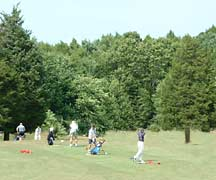

Scoring

In every form of play, the goal is to play as few strokes per round as possible. Scores for each hole can be described as follows:
Term on a
Scoreboard
|
Specific Term |
Definition |
|
Triple Eagle (or Condor)
|
four strokes under par |
|
Double Eagle (or Albatross)
|
three strokes under par |
|
Eagle
|
two strokes under par |
|
Birdie
|
one stroke under par |
|
Par
|
strokes equal to par |
|
Bogie
|
one stroke more than par |
|
Double Bogey (or Buzzard)
|
two strokes over par |
| Triple Bogey |
three strokes over par |
The two basic forms of playing golf are match play and stroke play.
- In match play, two players (or two teams) play each hole as a separate contest against each other. The party with the lower score wins that hole, or if the scores of both players or teams are equal the hole is "halved" (drawn). The game is won by the party that wins more holes than the other. In the case that one team or player has taken a lead that cannot be overcome in the number of holes remaining to be played, the match is deemed to be won by the party in the lead, and the remainder of the holes are not played. For example, if one party already has a lead of six holes, and only five holes remain to be played on the course, the match is over. At any given point, if the lead is equal to the number of holes remaining, the match is said to be "dormie", and is continued until the leader increases the lead by one hole, thereby winning the match, or until the match ends in a tie. When the game is tied after the predetermined number of holes have been played, it may be continued until one side takes a one-hole lead.
- In stroke play the score achieved for each and every hole of the round or tournament is added to produce the total score, and the player with the lowest score wins (Stroke play is the game most usually played by professional golfers).
There are variations of these basic principles, including skins, stableford scoring, and team games including foursome and four-ball games.